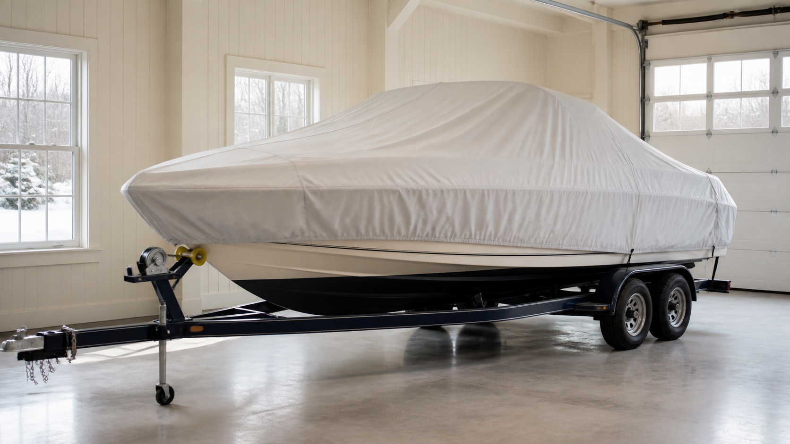

ЛОДКИ · 04
Консервация лодки на зиму
Завершение сезона без спешки помогает сохранить корпус, мотор и оснащение к следующей навигации.

Корпус и салон
- Вымойте и полностью высушите корпус, палубу, рундуки и текстиль.
- Уберите воду из лодки, снимите ценную электронику и аккумулятор.
- Зафиксируйте сколы и трещины, чтобы вернуться к ним в межсезонье.
Мотор
Промойте охлаждение пресной водой и выполните работы по регламенту производителя. Проверьте редуктор и винт, не оставляйте воду в уязвимых узлах.
Место хранения
Выбирайте сухое проветриваемое место. Периодически проверяйте тент, натяжение и отсутствие конденсата.
Защита от влаги
После мойки обязательно высушите рундуки, текстиль и дренажи. Тент должен защищать от осадков, но не создавать герметичный объём: конденсат наносит корпусу и оборудованию не меньше вреда, чем дождь.
Весенний контроль
- Снимите тент заранее и проветрите лодку.
- Повторно проверьте аккумулятор, электрику и сливную пробку.
- Осмотрите отмеченные осенью сколы и трещины.
Полезно после проверки
Раз в месяц осматривайте лодку: состояние тента, конденсат, дренажи и следы грызунов. Несколько минут контроля позволяют заметить проблему до повреждения салона и электроники.